week 13: networking & communications
buses, bridges and nodes
This week, our task was to design and build a wired or wireless network connecting at least two processors.
I chose to make a serial network and started by designing the bridge and node circuits, taking Neil's model as an example.
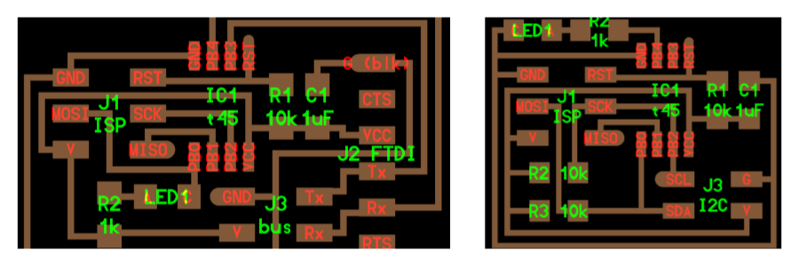After fiddling around with EAGLE, I thought my boards looked similar enough to Neil's, so I got ready to export the .png files. I did a DRC check to see if there were overlaps, but all was clear. I drew thinner routes this time around (with a width of 0.012, when I had previously drawn them with 0.016), to make sure I would have less overlap issues than last time. I seemed to have worked, I thought.
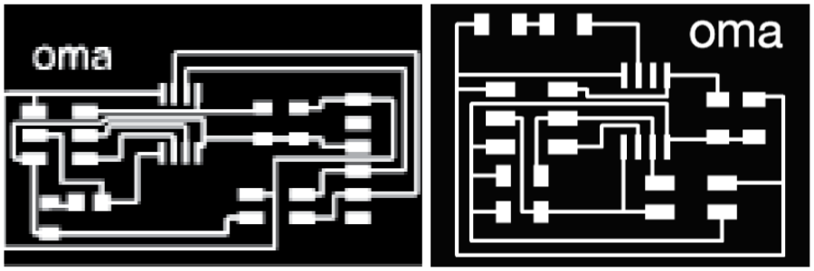The milled boards looked ok at first glance.
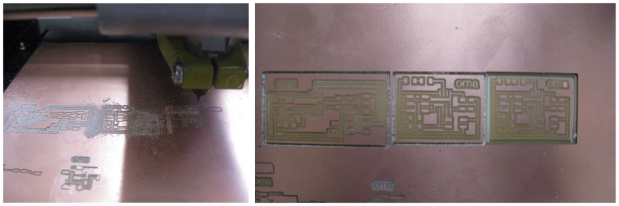And yet, there were quite a few problems with them. Basically, the millbit (1/64 inches) didn't cut through all the paths, so a lot of routes were not separated. I had to manually cut these routes with an exacto knife (5 out of 6 came out ok, the 6th one...was so hurt that I had to put some scotch tape on it to maintain the contact)

MOUNTING & BAKING THE BOARDS
I was now ready to mount the components on my circuit.
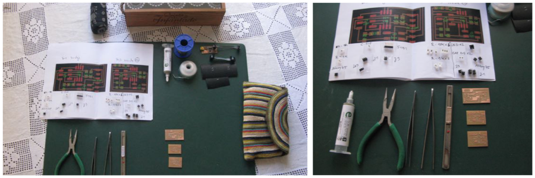For some strange reason, the solder mask I had made with the vinyl cutter was a bit bigger than the real board, so I ended up having to paste each pad manually, with the help of a needle and an exacto knife. It was not as hard as I thought, though and the three boards were ready in less than half hour.

Since I didnt have the heat gun available this week, I decided to try baking my circuits in the oven. I found an old toaster oven and looked through this sites for instructions on oven-baked circuits:
Surface mount soldering with a toaster ovenThe info on this page is detailed and straightforward, but the temperatures mentioned were way too low for the solder paste I was using. After looking at the datasheet , I realized the melting temperature of my paste was 183ºC. I set the oven for 190ºC (and later on turned it up to 220ºC).
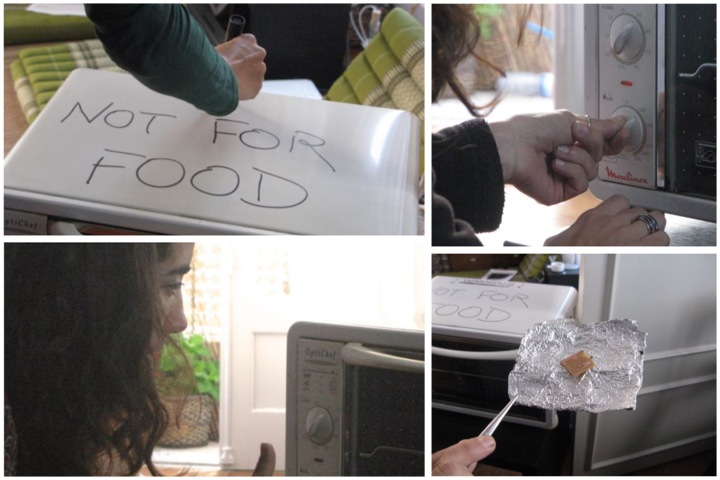I didn't have a termometer to check the oven's real temperature, so I put a test PCB with a solder drop in to see the result. After 3m40, the magic started to happen and the paste turned all shinny. I took it out and I put in a second test PCB, this time with a component attached. This time, after 4min10 at (what-the-oven-claims-to-be 220º), the solder was shinny and the component attached to the board.
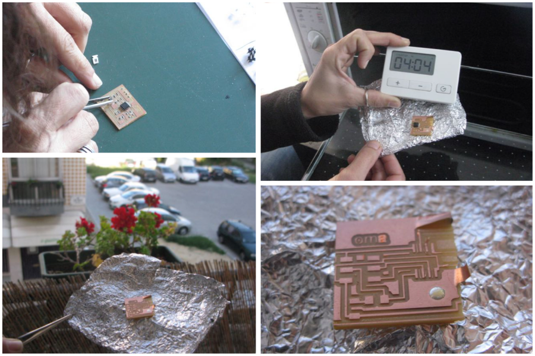I then carefully placed all the components on my boards and started to baked them, one by one. The baking time oscilated between 3:45 and 4:10. Once I saw the paste turn silver, I opened the oven's door and let it sit there for about a minute (sudden temperature drop is apparently not great for the solder paste).
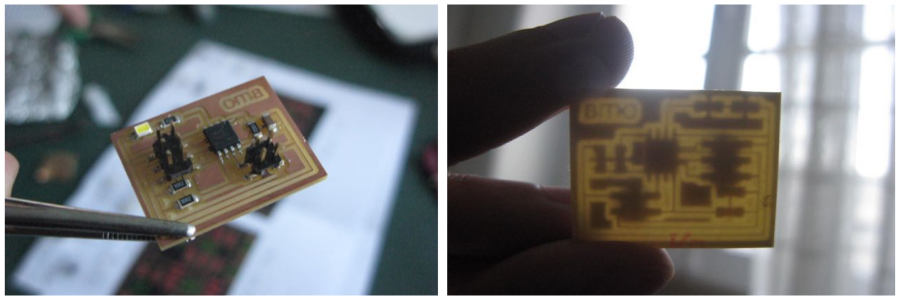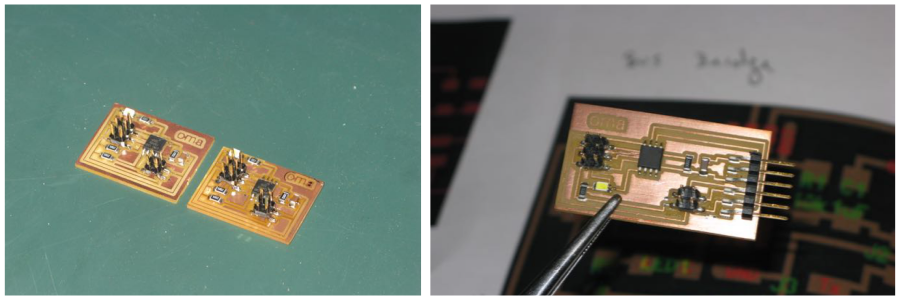
And just like that, in 20 minutes all my boards were sucessfully baked!
PROGRAMMING THE BRIDGE
It was now time to start programming them.
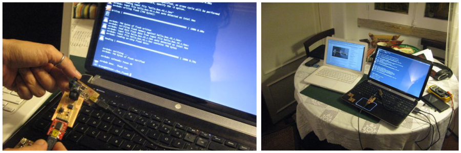I downloaded Neil's "fixed code" from the Providence tutorials and tried loading it into the bridge board with my ISP.
The bridge board was not charged the first time around, so the AVRdude failed in loading the code.
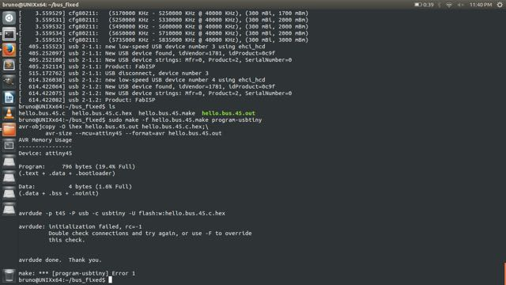After charging both boards, I tried programming the bridge again.
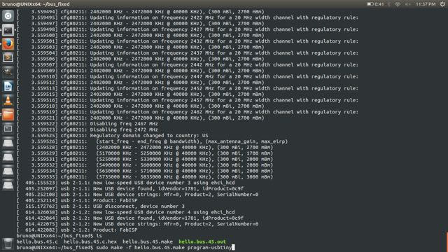This time, it worked just fine, and the AVRdude showed me a happy message at the end:
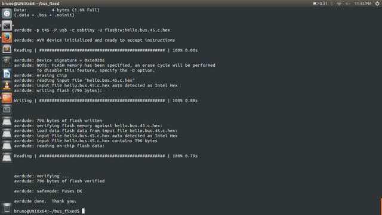I then removed the ISP and plugged the bridge circuit directly to the computer.
I typed "sudo dmesg" on terminal, a helpful command when diagnosing or debugging hardware and device driver issues. I could now to see the log of all parts connected with the computer and my bridge was listed, yay!
I opened Arduino IDE and found its serial port in the Tool menu: usbserial-A10137RD. Sadly, as I keyed in 0 in the serial port window (9600 baud), the LED on my circuit didn't blink.
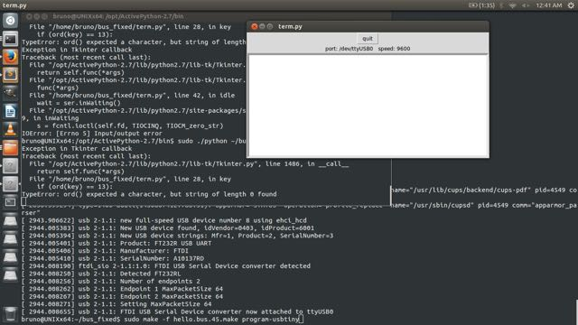I re-checked the circuit connections with the voltmeter and as I touched the RX pin, the bridge board started to send me some a message.
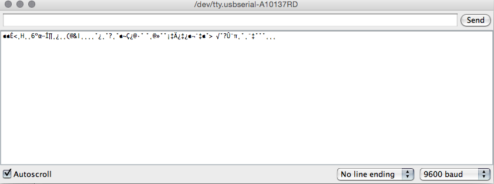My bridge board was connected. Now I had to figure out why the LED refused to blink...I decided to leave that check for after I programmed the two nodes.
PROGRAMMING THE NODES
Unfortunately, I didn't have enough time to sucessfully program the node boards, as I still needed to do some last-minute "fixing" - a couple of components were slightly out of place as they went in the oven and I had to de-solder and re-solder them first.
I have tried loading them with Neil's code, but no success thus far...
(to be continued...)